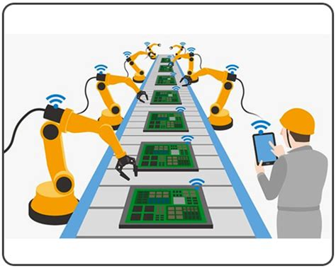
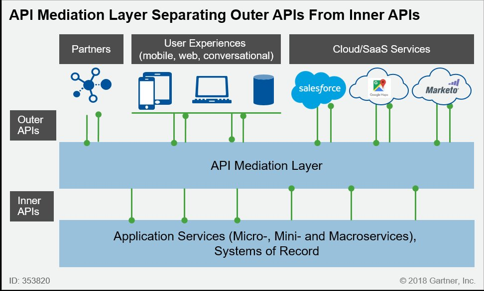

Hyperautomation allows firms and organisationsto automate more complex work. It was defined by Gartner as
"Hyperautomation deals with the application of advanced technologies including AI and machine learning to increasingly automate processes and augment humans.”
Hyperautomation is the application of advanced technologies like AI and machine learning to augment workers and automate processes in ways that are significantly more impactful that traditional automation capabilities. As no single tool can replace humans, hyperautomation involves using multiple tools in symphony, including robotic process automation (RPA), intelligent business management software (iBPMS) and AI, with the goal of increasingly AI-driven decision making. It’s the next step beyond RPA, further replacing human involvement in physical and digital tasks, and eventually the complete decision-making process.
Click Here for more Information on Hyperautomation
Multiexperience development platforms help businesses trade-off between ease of development vs scalability and custom functionality. These platforms simplify creating apps that work on various touchpoints and devices, allowing companies to test and improve their user experience on a new platform with limited investment. Once the requirements of the app for this new platform reaches a certain level of complexity, companies can decide to build custom, platform specific apps.
Click Here for more Information on Multiexperience
Distributed cloud is the application of cloud computing technologies to interconnect data and applications served from multiple geographic locations. Distributed, in an information technology (IT) context, means that something is shared among multiple systems which may also be in different locations. Distributed cloud speeds communications for global services and enables more responsive communications for specific regions
Click Here for more Information on Multiexperience